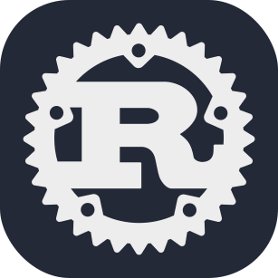
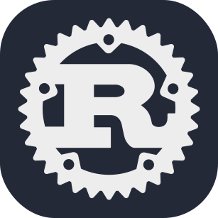

work
INFOSYS
Technology Analyst
Trivandrum, Kerala
- Proven expertise in RDKB platform, developing and maintaining middleware CCSP components for RDK-B platform using Embedded C in Linux environment.
- Worked on WebPA/WebConfig client development to enable secure and efficient cloud-based configuration management for RDK-B devices.
- Strong analytical skills in troubleshooting complex issues - analyzing JIRA tickets, debugging root cause, and delivering high-quality solutions.
- Maintained and enhanced core RDK-B components including Utopia, CcspPSM, and CcspLMLite by analyzing legacy code and implementing feature updates aligned with current coding standards.
- Created Yocto layers (meta-*) and wrote bitbake recipe (.bb, .bbappend) files for building packages in RDK-B Yocto based build system.
- Solid understanding of networking protocols such as DHCP, TCP, UDP, NAT, and key networking concepts relevant to broadband devices.
- Strongly skilled in Linux shell scripting, command-line utilities and custom script development.
skills


 

Embedded
RTOS
STM32
Arduino
PCB Design
UART/I2C/SPI